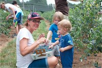
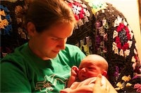

Timmy
(Click Me!)
| Name | Timmy Visher |
| Age | 26 |
| Occupation | Software Developer, Sinner, Jesus Freak |
| Favorite Food | General Tso's… No! Wait! Umm… Spaghetti and Meatballs in Rosa Sauce! No! Gah! Uh… Wings and Blue Cheese! Guh… |
| Favorite Toy | Emacs |
| Favorite Christmas Thing | Free time to spend hours in deep conversation with the people I love. |
| Quote | Ah! Seriously scared right now! Oh, I hope no one's watching! |
Zeal
(Click Me!)
| Name | Zeal Visher |
| Age | 3 months |
| Occupation | Cutey Pie, Defender of the Universe |
| Favorite Food | Leche. Duh! |
| Favorite Toy | Imah's Leche |
| Favorite Christmas Thing | Imah's Leche! Getting the picture? |
| Quote | Ooh, look at me! That's me as a baby! … Ok, let's move along! |
Jessie
(Click Me!)
| Name | Jessie Visher |
| Age | 25 |
| Occupation | Mother of many, orderer of the disorder, kisser of boo-boos, and receiver of a lot of much needed grace |
| Favorite Food | Lox & Bagel |
| Favorite Toy | My iPad |
| Favorite Christmas Thing | The Tree |
| Quote | Frying Pans! Who knew, right? |
Honor
(Click Me!)
| Name | Honor Visher |
| Age | 1 1/2 |
| Occupation | Master of Mystery, Destroyer of Households. |
| Favorite Food | Meat & Pasta |
| Favorite Toy | Anything I can destroy or put a cap on to |
| Favorite Christmas Thing | Pulling chords and branches off of the Christmas tree |
| Quote | But you, son, you can destroy anything! |
Fiery
(Click Me!)
| Name | Fiery Visher |
| Age | 3 |
| Occupation | Smile Inducer, Protector of the Innocent |
| Favorite Food | Chicken Wings |
| Favorite Toy | The lights on the tree |
| Favorite Christmas Thing | The lights on the tree, because God made the lights |
| Quote | With great power, comes great responsibility. |
☜ Click to get back
Click to watch the making of video… ☜
Jess, the kids, and Tim slaved away for 368 straight days to make this site!
All we got for our efforts was this stinking video…
But we love you guys. For real!
{kind=link}
The Visher Testimony
We give thanks to you, O God; we give thanks, for your name is near. We recount your wondrous deeds! — Psalms 75.1
So much has happened in 2011 and we are excited to share it with you all. Be sure to click on all the pictures. There's plenty more where they came from over on Flickr!
January
The year starts out with the best news ever: another baby! The baby would be due sometime in the middle of August and Jess would soon experience morning sickness with two toddlers. She'd be lying if she said it wasn't very difficult!
This month we started going through The Revelation to John as a family, trying to do a “family worship” after meals, which has been impossible tricky to maintain.
February
One very exciting thing happened this month: Tim's sister, Katie, gave birth to a little boy, Noah Rowan Harper, on February 23, and the Harper Clan grew by 1! He introduced us to the world of being an aunt and an uncle and Jesse and Katie to world of parenthood. We look forward to the blessings of a cousin for our children and a nephew for ourselves.
March
Honor turned one in March and, just like with Fiery, we took the family to the Elmwood Park Zoo to celebrate with Aunt Sammie.
We started a sporadic weekly reading time with the family and we started with The Hobbit by J.R.R. Tolkien. The kids were still too young to really “get into” this one but we enjoyed reading it out loud.
We took a trip to Branchburg, NJ for our cousin Kristen's third birthday.
April
Tim, who was originally working for Turnberry Solutions since the beginning of the year (please see the amazing story in last year's testimony (PDF) for how God set that up!), had been consulting at Siemens. In April he left Turnberry and was hired by Siemens full time.
We were feeling adventurous, so with a 2 and a half year old, a one year old, and a baby 20 weeks old in utero, we took a trip to Florida for the Miller's wedding where Tim would lead a few songs in worship. Pop-pop (Tim's dad) came with us and it was a lot of fun. We had a chance to go to Sea World for two days and make a quick visit to the Magic Kingdom to visit Victoria, one of Tim's cousins. The kids loved Sea World, with the exception of Shamu, who splashed Fiery. Fiery did not like it (that's putting it mildly). In Florida we finished reading The Hobbit and talked about what our next book would be.
When we came home Tim took up Wind Waker (Zelda) for the GameCube and the kids (especially Fiery) would be very excited that Abba (what we call Tim) would be playing with “the little man who runs around.”
At the end of this month Fiery gave us her first real scare when she poured a boiling cup of tea on herself. We quickly immersed her in cold water but the burn did take a couple of weeks to heal. In the beginning Fiery confined herself to the couch and couldn't go anywhere without a blanket, but after a few days she began to eat regularly again and run around. It's been very encouraging asking her about it and hearing her thoughts: “Remember, Fiery, when you got burned?” and she replies, “Yes. And then God healed me!”
May
In May we got some new toys: an iPad 2 and a Macbook Pro to replace Tim's ailing Macbook (It served him well, for over 5 years!). We decided to start reading through the Harry Potter books and watching the corresponding movie after each book. The goal was to finish all seven in time for the last movie to come out in theaters. We became vigorous Harry Potter readers, reading about 100 pages a week and finally succumbing to getting the audio book so we could “read” in the car. Hermione will never sound the same. Thanks a lot, Jim.
For some reason Tim enjoys throwing his children and Honor got one for the history books at a party for our friends' son, Jakeob. Thankfully, Nik and Alicia didn't stop us due to the insurance hazard and Jesse played along like a champ. Honor looked terrified but came out alive and healthy.
The siren call of the wild drew us out again, and this time we think we were over our heads; an even more pregnant Jess, a 14 month old, and a 30 month old, drove for 12 straight hours to Chicago to visit some relatives in a Sprinter with Tim's family (including baby Noah, 3 months old). It was a fun time but who knew that both toddlers would get sick (with fevers) over that weekend? We learned our limits and enjoyed the time with family.
June
In June our church received a new pastor who we like a lot, Pastor Joyce Anderson. She has a very different style than our previous Pastor, and she's working her tail off for the church.
The Harper Clan purchased their first home base and we've had lots of fun play dates and meals in it since.
We started fruit picking to make jams for the first time. This month was strawberries so Jess, the kids, Katie and Noah, went to a farm out in Quakertown and got about 6 pounds of strawberries and we just finished our last jar.
July
In July Tim started a video series called VimGolf in Emacs and puts out a new video every week. We are enjoying his complete and utter nerdery minor Internet stardom.
Honor took his first trip to the beach where he got a mouthful of sand. Fiery, who was so excited about the ocean, fell in the ocean water after 1 minute, and didn't want another part of it for the rest of the trip. We had dinner with our Aunt Lynn's family at their beach trailer in Sea Isle.
On the way home, at about 10 ㏘, we got a flat, with no key to take the tire off. After three hundred and seventy-five dollars, a new AAA membership, and 7 hours we all got home at about 5 ㏂. On the bright side the kids loved riding in the big tow truck all the way home.
We went Blueberry picking with Mom-mom and Grand-pop (Jess's parents) in West Chester and froze the blueberries and the kid's enjoyed blueberry pancakes for weeks afterwards.
Christina, Tim's younger sister, started dating a bloke named Redmond who she met in Eastern University and he would be a wonderful acquisition for our evil empire.
August
Not much happened in August. Jess, who thought she would have a baby in August, made sure to tie Tim to the ship's mast and stuff the rest of our ears with wax. She developed a cleaning system for the house (which has worked wonderfully when she was able to implement it after the birth) and we started Cook Day. Cook day is on Sunday and we do all of our cooking for the week in the span of three to four hours before church. This has been a wonderful idea and we would highly recommend it to any family, no matter how big.

We finished Harry Potter in time to see the movie. Tim and Jess had their first night alone since Fiery was born (!) when Fiery and Honor slept over their Uncle Jesse and Aunt Katie's house.
September
In early September we introduced the newest member of the family: Zeal Manasseh Visher, who's timing could not have been more perfect (please see his website for more details). He has been extremely smiley and fairly easy tempered making this transition the easiest by far.
Now we had three kids, and a little Scion xA. That's not exactly a 5 person car, especially when 3 of those people need car seats, so Tim's dad generously let us trade his mini-van for our little Scion. We loved that car but it was time for a bigger one. Tim also fulfilled a life long dream and purchased a used scooter to travel to and from work in. Jess has been on it once.
We prayed about it and felt led to begin to pursue purchasing our apartment from our landlords and good friends. We are still in the process and are excited about God's timing for it all.
October
In October Fiery had her third birthday. We started a tradition that you get to pick what you want for dinner and who you want to share it with on your birthday. Fiery wanted macaroni and cheese and cookies in the backyard with Pop-pop. So that's what we did and, not surprisingly, she ate her dessert before her meal.
We had our first Visher Family Bash: a yearly party for our family and friends that we wanted to start sometime in the fall. And what a better way to start it off than an October blizzard? It was a ton of fun, very cold, and Tim purchased his own grill for the occasion. It was an unforgettable event.
Tim finished Wind Waker on the GameCube (no more “little man who runs around”). Fiery had her first movie theater experience when Tim took her to see The Lion King in 3D. She refused to wear the glasses, but we think she enjoyed the experience even though we weren't exactly sure what she saw.
We attended a Fall Festival in Media at Hillside Farm, a wonderful farm right around the corner from us, sponsored by an organization we're very excited about called Greener Partners. They are committed to educating the community in farming and growing a garden through classes (for young and old). They have a local market 15 minutes from us with bonfires, kids activities, and community events. We also signed up for our first CSA for 2012 through their farm in Media. We are very excited about that and will let you know how the produce was!
November
In November we visited the Tyler Arboretum for the first time to see their Tree House exhibit with Pop-pop.
We sponsored our first child through Compassion. We thought it would be a wonderful thing if each of our kids could have a friend in another country who we would help monetarily with their basic needs. We felt led to choose Shelya for Fiery, a little girl just a little over Fiery's age who lives in Bolivia, the poorest country in South America. We want to encourage Fiery to pray for this little girl as well as write to her when she is able to.
We also did our first Operation Christmas Child shoe box. As each of our children turns two, we will fill a shoe box full of toys, treats and hygienic necessities, to be shipped to a boy or girl in a famished country. This year Fiery filled her shoe box for a little girl 2-4 years old. This is something we've been meaning to do for years, and are excited that we finally did.
This seems to be the year of starting traditions because for Thanksgiving we started a new Visher/Harper tradition where the day after Thanksgiving, we all got together, had a non-traditional Thanksgiving dinner and did one big sleep over. The next day we took a trip on a train (Honor, Noah and Zeal's first train ride!) to the Reading Terminal Market and enjoyed good food and super nice weather. As sad as it is that we'll probably never be able to order The Travis from Roger at Harry Ochs again, it was still so much fun and we look forward to doing it again next year!
After a couple different hair styles, Jess decided to buzz her hair and will probably spend the next five or six years growing it out again.
December
In December we updated our gift letter (see the original) and Tim started stopped started again wanted really badly to do it well but can't quite seem to do it worked on a new Bible reading plan (PDF). We bought our first full size Christmas tree and managed to fit it into our living room. The kids love it and were happy to decorate. We started going through an ebook called Truth in Tinsel which has activities for young children to make your own ornaments that tell the story of the birth of Christ. We've been doing about half of them but it's encouraging that Fiery is excited to make them.
We took our super cool Christmas photo with no injuries and put together a website that you are now reading.
We just found out that we've been tentatively approved for mortgage assistance from MontCo, which means we're one step closer to becoming owners of 114 Haws!
Finally, Tim rediscovered that riding 13-miles on a bike (read: bicycle) into work isn't that big a deal.
We hope you have a wonderful Christmas and a great new year!